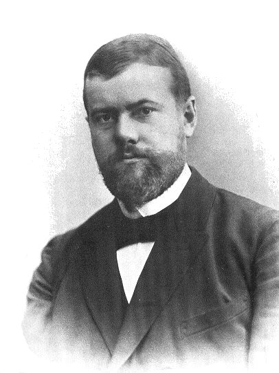

Midterm Review. Part 1. Empire of the Tsars.
I. Key Terminology
Max Weber's ideas about Political legitimacy (1921)
i.e., a virtue of political institutions and of the decisions made within them

In this course we argue that political power in Russia is charismatic for the most part with episodic attempts to establish either traditonal legitimacy (hereditary empire) or legal-rational legitimacy (attempts to run democratic reforms in 1905-1914, 1991-1999).
Juliet Johnson's notion of "decentering 'a Great Russian' narrative"
- not naturalizing a Russian “sphere of influence” or using terminology like the “near abroad” or “former Soviet republic” to characterize the sovereign states that border Russia.
- De-centering Russia also means taking a pluralistic view of the region as a whole, and even questioning whether or not it is in fact a meaningful region.
- “Postcommunist” and “post-Soviet” as descriptors increasingly obscure more than they reveal, implying continuities and similarities that in many cases no longer exist.
Benedict Anderson's theory of modern nationalism and nation state (1983)
- a nation iс a socially-constructed community of citizens who perceive themselves as part of a larger group. Anderson argues that modern nations are recent, dating back to the 18th century.
- Nationalism fights divine right and hereditary monarchy
He also argues that nations are not ancient communities united by blood or language (is this a case of modern Ukraine?)
- Nation is a horizontal community
- Nation is popularly sovereign (ruled by people)
- Nation is limited (cf. empire)
The Empire (from Michael Doyle Empires 1986 and Nancy Condee The Imperial Trace 2009)
- Empire is "a composite structure marked by inequality, subordination, and difference, with hierarchically distinct units, such that the metropole is the center through which the peripheries largely negotiate their relations to each other.
- These hierarchically distinct units may be signaled by a range of markers kept in place to sustain systematic relations of inequality of access and privilege. It is by this definition of empire that Ivan IV’s 1552–56 conquest of Kazan’ and Astrakhan ... is traditionally claimed to mark Russia’s imperial turn, the moment when ethnically, linguistically, religiously distinct peoples fall under the sway of the Muscovite ruler (Condee 13)
- Empires are unlimited (have porous borders)
- Historically Empires either claimed divine right or relied on hereditary monarchy
Architecture of the Empire
Fig.1. The Dormition Cathedral of the Mother of God (1475), the coronation cathedral of Russian tsars
Fig.2. St. Basis's, aka as Cathedral of the Mother of God (1555)
Fig.3. Savior on Spilled Blood in St. Petersburg (1881)
Music of the Empire
Modest Musorgsky. "Pictures at an Exhibition" Picture 9. "The Hut on Chicken Legs" (1874)
Modest Musorgsky. "Pictures at an Exhibition" Picture 10. "Great Gate of Kyiv" (1874)